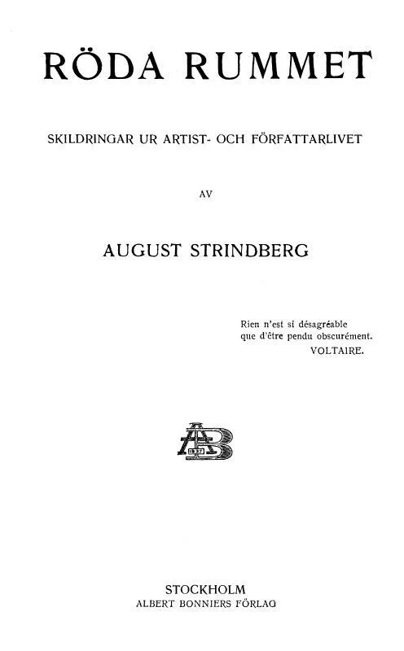

Drama
Röda rummet
por August StrindbergEm 'Röda rummet' (O Quarto Vermelho), August Strindberg explora a deterioração de um casamento através da lente da obsessão e da loucura. A peça retrata a crescente paranoia de Jeb, um pintor, que acredita que sua esposa, Alice, está envolvida em um culto satânico e que o quarto vermelho da casa é o epicentro de forças malignas. Através de diálogos intensos e cenas claustrofóbicas, Strindberg investiga a fragilidade da mente humana, a influência do ambiente e a natureza da verdade, questionando a sanidade e a realidade.
Pontos de Atenção & Perspectiva Crítica
Aspectos essenciais que o leitor deve ter em mente ao explorar esta obra:
Minha Opinião sobre Röda rummet
Em breve: resenha e opinião crítica do leitor após a conclusão da leitura da obra no app.
